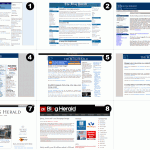
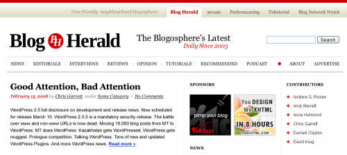
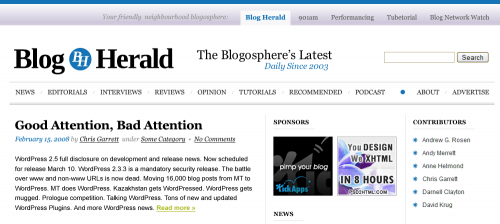

{kind=link}
Web design and design in general should never be judged from the aesthetic viewpoint or by how much one likes/dislikes a particular color scheme, typeface or the layout of different content elements. The purpose of design is to make the content organized and accessible to the widest target audience possible. Design should be the information highway without traffic jams and clearly marked road labels which don’t require any Design Positioning System (DPS) in order to navigate.
By content I don’t mean only text and photos, and by road labels I don’t mean the physical labels or navigation tooltips on a website. The message which the website wants to deliver to its users is the content — everything from writing tips, or well explained PHP tutorials for beginning web developers, to “make money online” suggestions for young mothers. The content defines your audience and only by understanding that audience one can shape or design the content in a way that works the best. The purpose of the website should define its design and structure.
Luckily the blog authors can relatively easy understand their audience, because they write or post about something they are truly passionate about, and it is most likely that their audience should be as well. Their audience is very similar to themselves and therefore the simple question to ask is “what would I like to know?” or “what have I found out recently, that other people might find useful?”.
Keeping the above consideration in mind, lets look at the current design of Blogherald.com and ask a few questions:
{kind=link}
- Blog Herald logo is a square with rounded corners and red background with a symmetric horizontal darker shade gradient with two lower-case oblique styled letters bh (an abbreviation from Blog Herald) in the middle. Square logo is aligned to the very left on the black header background without any padding from the header border. The icon is the only element on the whole website which uses gradient background or an oblique sans-serif typeface. Why such a decision?
- Blog Herald logo title is right next to the logo icon and is set in capitalized sans-serif typeface with letter ‘o’ in theme’s red. Why exactly ‘o’? Is it because ‘o’ resembles a sphere the most? Use of the word Herald comes from the newspapers, so why was the sans-serif typeface chosen? Just below the title is the tagline ‘Blogosphere’s latest, daily’ and ‘Since 2003’ set in the same typeface, but in upper-case.
- Related Network links in the top right corner are set in serif typeface without any differentiable styling (in color or with an underline) that would suggest that they are links. Each of them are separated by dots which are never used anywhere else on the website. Below the links is a description ‘Your friendly neighborhood blogosphere’ set in the same serif typeface but with cursive styling, which again is never used anywhere else. The current layout and positioning very weakly suggests that Blog Herald is one of the proud network members and doesn’t encourage the readers to explore the other sites.
- Search bar is aligned right without any padding from the rightside border of the header background, even though there is plenty of horizontal space around it — enough for an input field label or a ‘Search’ button. This would also allow removing the obvious search instructions.
- Main Navigation menu items are aligned horizontally bellow the header and are set in uppercase sans-serif typeface similar to the one used for the tagline, and are separated by lighter vertical lines. Although this font choice is good for the limited horizontal space and it ties well with the style of the tagline, in such combination (sans-serif + uppercase) it never appears anywhere else on the blog. The first two menu items ‘About’ and ‘Advertise’ are much less important to the readers than those items that follow and correspond to the blog’s content like ‘Editorials’, ‘Reviews’ or even more importantly ‘News’, which is currently placed only fifth.
- Section headings use a slightly larger and uppercase serif font which is fairly different from the viewpoint of typography.
- Post tagline is styled the same way as the rest of the content, and would much help the vertical rhythm and the scannability of the post listing if it was set a bit different than the rest of the content. Placing ‘Leave a Comment’ link right after the post title seems to be the most unreasonable design decision (yes, it is a design decision, because placing it there expects a certain user behavior or need). Having the ‘Filed under …’ information below the post introduction and the ‘Post a Comment’ immediately after the title is definitely unjustified.
- Post related information contains the same link to all the articles written by the same author, which is already mentioned in the post tagline. Removing this link and replacing the ‘Filed under …’ information as suggested above would leave there only the copyright information which is repeatedly displayed after every post introduction. Why display it under every post, if it is also mentioned in the page footer?
Suggestions for improving the Blog Herald
These are just a few observations about the top part of the Blog Herald’s layout and an examination of all content elements including the column content and individual section pages would be required for a complete design analysis. Nevertheless, it is enough for creating a layout that would correct the design mistakes mentioned above:

Suggested Redesign

Unique theme color for each of the member blogs
Ideas behind the suggested design
Although most of the changes are obvious, here are some of the design features worth mentioning:
- Blog Herald is part of a blog network, therefore the top horizontal stripe which links all the network members would span across the full browser width, while each of the individual blogs would have the usual width (~70em) which is visually emphasized through the top and bottom borders of the main navigation. The slogan of the network placed before the links and the tabbed design of the network navigation distinctively shows that the site currently viewed is one of the members.
- A single theme color in each of the member sites would create a strong and unique brand for the whole network.
- Separated content navigation and general information links in the main menu put more emphasis on the unique content of this blog.
- Only two typefaces are used — serif font (like Georgia) for “important type” of content, and sans-serif (like Arial) for the body copy. Notice how the capitalized serif font is used consistently in navigation and for all the sidebar headings.
Conclusions
One should never criticize the design of a website on the grounds of visual liking or preference, but rather by how well the design enhances and delivers the content to its readers and viewers. Different content requires a different approach to presenting it in the way that is both accessible and easy to explore.
All of the blog authors want their readers to stay around and view more of the content they have produced. Unfortunately the format of blogs inherently makes the latest content to appear more prominent and buries some of your much beloved older posts deep into the archive pages. Although describing the solution for this problem would require another article, it is worth mentioning that sometimes just grouping and organizing the existing content, and removing the clutter makes the users much more comfortable with staying around.
Want to hear my critique of you blog/website?
Just leave a comment with your views on the blog design problems discussed in this article or about the web design in general. If more than three people post a comment, I’ll randomly choose three.
I agree with you on basically every point. From just a quick look on this site it looks nice, but as soon as you try to focus on only one detail… voila.
Also, I’ve never really understood the fuzz around the “bottom bar” containing all sorts of listings that didn’t really fit into the main content (e.g. comments, resources, friends etc). You have to scroll through the whole page to even realize it’s there, which I rarely do. How can this have become so popular?
But, at least, this theme made it out to the public, while we’re still impatiently waiting for yours ;)
Kim, thank you for the comment. I think that “bottom bar” might be useful on single article pages, where people would like to find something else to read. It may be useful also for the information about the author (on single author blogs/webpages) especially if the user comes from a search engine. Placing too much information in sidebars is not very good as well and moving some of it to the footer might be one of the solutions.
I think that apple.com is a good example — notice how they try to reduce the vertical length of each page by placing different collapse/expand elements in the sidebars. And the “bottom bar” serves the purpose of secondary navgiation/product listing. I think that the vertical page length is really important here. After scrolling through long list of content, I wouldn’t expect any important information/navigation waiting for me at the bottom.
Regarding the theme — I have finished both of the plugins and will now work on Sunrise Racer theme. During the past month I have implemented many new features here on this blog (which uses Morning Racer theme), like the post excerpt thumbnails and the previous/next post navigation under each of the individual articles and I would also like to include them in SR. I hope it won’t take too long. Be sure, that I will send you an email as soon as it is ready.
I really enjoyed the older newsparer feel, and while I have come to appreciate the new design, i never treated the content with the same kind of importance as before. And I visited the website less after the new design.
PS: if you havent already you must check out the ‘newly created blog’ of flash designer Jousha Davis. at joshuadavis.com
he now uses wordpress
Yes, Ming, I would also agree that the previous design was the best which BH has had. On a sidenote: there are rumors going around that they are actually planning a redesign in a near future, so lets see how it turns out.
I came here through BH, and I agree with you on almost every point. I read their content through RSS, so I almost never go to the site itself, but you’re right.
Very interesting critique of Blog Herald, and I like what you did with the menu bar redesign, but I’d like to add to the conversation and critique the suggestions you made that I dont understand:
Blog Herald Logo:
While I agree with you on points A and B about the logo, I don’t think you’ve achieved the best results on the redesign you suggested. Why change the obique bh into BH serif? Having the logo seperated that much along with the slogan centered in the middle results in a cluttered header.
Blog network:
The suggestion to change the blog network links into a tabbed menu suggest that these links are apart of the blog herald website, which they aren’t.
a common usabiilty error that will fustrate readers, questioning why it was designed like so.
Megan and Ptah, thank you both for the comments.
Ptah, you are saying that I changed oblique bh into BH serif. Truth is that I changed lowercase oblique sans-serif bh into uppercase italic serif BH, and the reason for doing so was mentioned in the article — nowhere else on Blog Herald can you find a combination of oblique/italic lowercase and sans-serif type.
In addition, if the title Blog Herald is currently capitalized, why use lowercase abbreviation as a logo?
In the suggested redesign you can see italic type used throughout the different elements, while the current design uses it only for the logo (icon).
Slogan, however, is aligned right to the center of the middle column and has a right side whitespace equal to an approximate width of an ad. More importantly, notice that “Daily Since 2003” is aligned left with the right side border of the main content column (or the central axis). In fact the whole tagline is in the center of that axis.
With regards to network links — I was trying to make them more prominent than they currently are. Also, if all of the network websites would feature equal network header navigation (which I suggested in the article), it would in fact enhance the usability as people would never feel lost if they actually decide to visit another website from the network.
At the same time I totally agree with you that conducting a basic usability testing would definitely help to decide the “amount” of emphases which network navigation requires.
As a professional web designer I found this blog very useful. I notice that a lot of popular websites are cluttered and i wonder if viewers actually prefer this or a clean minimal style.